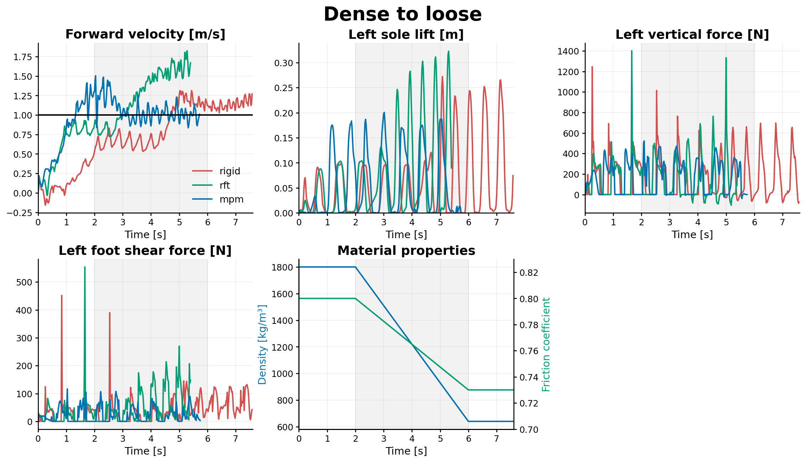
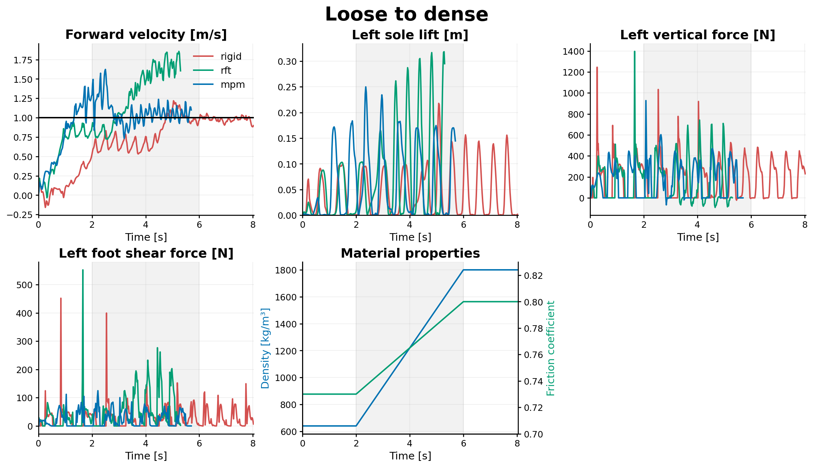
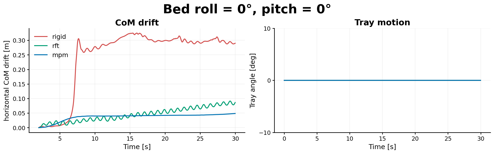
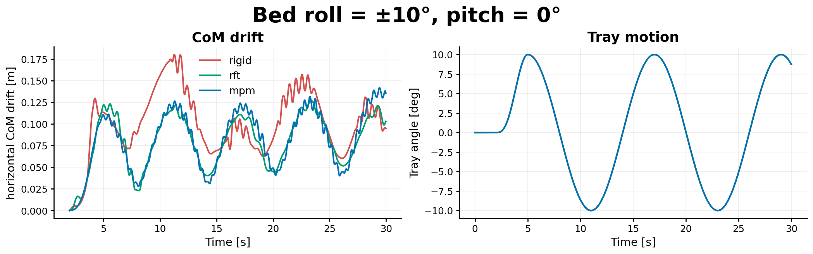
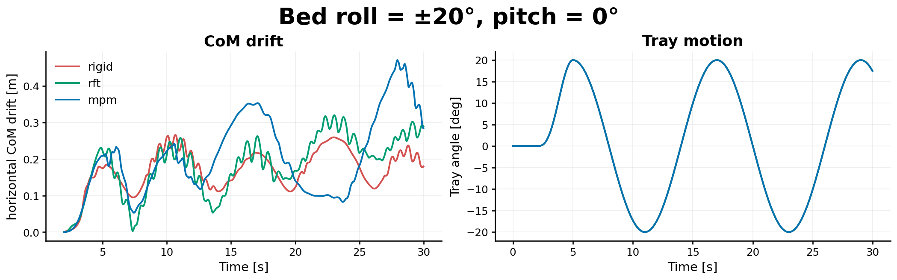
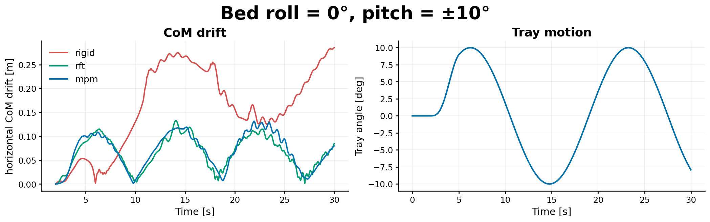
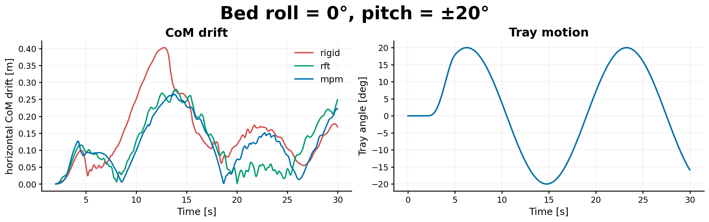

Slides built 2026-11-15. Record: outputs/T3.md. Every result here is unchecked: no checks/T3.md exists yet.
| Policy | W&B run | Checkpoint SHA-256 | Training task |
|---|---|---|---|
| rigid | 3qymp37c | bf100ea4e9130119… | IsaacContrib-Velocity-Rough-G1-29dof-Rigid-MPMAlign |
| rft | sfwpm6xj | 2e5ed20da85fc486… | IsaacContrib-Velocity-Rough-G1-29dof-SoftContact-MPMAlign |
| mpm | jqur5jhm | 0852d6160c916f5f… | MPM mixed terrain (W&B project g1_29dof_mpm_mixed_terrain) |
| Suite | Saved / planned |
|---|---|
| Slope traversal | 162 / 162 |
| Continuous material change | 18 / 18 |
| Standing on a tilting tray | 45 / 45 |
Use ← → or scroll to move between slides.
Nine slopes (0, ±10, ±20, ±25, ±30°) × three reset seeds per policy and surface, 1 m/s forward command, 13 s horizon. Evaluating in MPM favours the MPM-trained policy, so this does not answer Q3.
| Evaluation surface | Policy | Trials | Traversals | Falls | Timeouts |
|---|---|---|---|---|---|
| MJWarp rigid terrain | rigid | 27 | 27 | 0 | 0 |
| MJWarp rigid terrain | rft | 27 | 27 | 0 | 0 |
| MJWarp rigid terrain | mpm | 27 | 24 | 1 | 2 |
| MPM terrain | rigid | 27 | 18 | 9 | 0 |
| MPM terrain | rft | 27 | 18 | 9 | 0 |
| MPM terrain | mpm | 27 | 26 | 1 | 0 |
Yaw tracking error: not done. The current report does not aggregate it. Velocity error is the mean horizontal error in the yaw-aligned frame over successful traversals only.
Failures: on MPM terrain the rigid and RFT policies fell in all nine uphill trials at 20°, 25° and 30°; the MPM policy fell once at −30°. On MJWarp rigid terrain the MPM policy fell once and timed out twice at +30°.
All three figures. Source: logs/rss_locomotion/final_rough_slope_20261115/code/native_report.py (IsaacLab checkout, tracked copy examples/RSS/locomotion/native_report.py). Raw data: /home/jkamohara/isaac/IsaacLab/logs/rss_locomotion/final_rough_slope_20261115/{suite}/. Runs: rigid 3qymp37c · rft sfwpm6xj · mpm jqur5jhm, each model_19999.pt. IsaacLab junnosuke/mpm_rl_task at bc77a1a41, working tree dirty when run. Click a figure to open it full size.
All three figures. Source: logs/rss_locomotion/final_rough_slope_20261115/code/native_report.py (IsaacLab checkout, tracked copy examples/RSS/locomotion/native_report.py). Raw data: /home/jkamohara/isaac/IsaacLab/logs/rss_locomotion/final_rough_slope_20261115/{suite}/. Runs: rigid 3qymp37c · rft sfwpm6xj · mpm jqur5jhm, each model_19999.pt. IsaacLab junnosuke/mpm_rl_task at bc77a1a41, working tree dirty when run. Click a figure to open it full size.
Flat 4 × 2 × 0.3 m MPM bed, 1 m/s command. Density and friction change linearly between 1800 kg/m³, 0.80 and 640 kg/m³, 0.73 from t = 2 s to 6 s. Young's modulus is not changed.
| Policy | Trials | Traversals | Mean velocity error [m/s] | Exit time [s] | Saw the full ramp |
|---|---|---|---|---|---|
| rigid | 6 | 6 | 0.122 | 7.14–8.04 | 6 / 6 |
| rft | 6 | 6 | 0.468 | 4.98–5.42 | 0 / 6 |
| mpm | 6 | 6 | 0.140 | 5.56–5.76 | 0 / 6 |

logs/rss_locomotion/final_rough_slope_20261115/code/native_report.py (IsaacLab checkout, tracked copy examples/RSS/locomotion/native_report.py). Raw data: /home/jkamohara/isaac/IsaacLab/logs/rss_locomotion/final_rough_slope_20261115/{suite}/. Runs: rigid 3qymp37c · rft sfwpm6xj · mpm jqur5jhm, each model_19999.pt. IsaacLab junnosuke/mpm_rl_task at bc77a1a41, working tree dirty when run. 
logs/rss_locomotion/final_rough_slope_20261115/code/native_report.py (IsaacLab checkout, tracked copy examples/RSS/locomotion/native_report.py). Raw data: /home/jkamohara/isaac/IsaacLab/logs/rss_locomotion/final_rough_slope_20261115/{suite}/. Runs: rigid 3qymp37c · rft sfwpm6xj · mpm jqur5jhm, each model_19999.pt. IsaacLab junnosuke/mpm_rl_task at bc77a1a41, working tree dirty when run. 3 × 2 × 0.3 m tray, zero velocity command, 30 s. Drift is the horizontal displacement of the mass-weighted robot CoM in the moving tray frame, relative to t = 2 s; the table gives the per-trial maximum, averaged over the saved seeds.
| Tray motion | Policy | Saved / planned | Stood 30 s / saved | Max CoM drift, mean [m] |
|---|---|---|---|---|
| roll 0° | rigid | 3 / 3 | 3 / 3 | 0.315 |
| roll 0° | rft | 3 / 3 | 3 / 3 | 0.094 |
| roll 0° | mpm | 3 / 3 | 3 / 3 | 0.054 |
| roll ±10° | rigid | 3 / 3 | 3 / 3 | 0.174 |
| roll ±10° | rft | 3 / 3 | 3 / 3 | 0.126 |
| roll ±10° | mpm | 3 / 3 | 3 / 3 | 0.143 |
| roll ±20° | rigid | 3 / 3 | 3 / 3 | 0.281 |
| roll ±20° | rft | 3 / 3 | 3 / 3 | 0.304 |
| roll ±20° | mpm | 3 / 3 | 3 / 3 | 0.375 |
| pitch ±10° | rigid | 3 / 3 | 3 / 3 | 0.299 |
| pitch ±10° | rft | 3 / 3 | 3 / 3 | 0.144 |
| pitch ±10° | mpm | 3 / 3 | 3 / 3 | 0.132 |
| pitch ±20° | rigid | 3 / 3 | 3 / 3 | 0.417 |
| pitch ±20° | rft | 3 / 3 | 3 / 3 | 0.273 |
| pitch ±20° | mpm | 3 / 3 | 3 / 3 | 0.266 |

logs/rss_locomotion/final_rough_slope_20261115/code/native_report.py (IsaacLab checkout, tracked copy examples/RSS/locomotion/native_report.py). Raw data: /home/jkamohara/isaac/IsaacLab/logs/rss_locomotion/final_rough_slope_20261115/{suite}/. Runs: rigid 3qymp37c · rft sfwpm6xj · mpm jqur5jhm, each model_19999.pt. IsaacLab junnosuke/mpm_rl_task at bc77a1a41, working tree dirty when run. 
logs/rss_locomotion/final_rough_slope_20261115/code/native_report.py (IsaacLab checkout, tracked copy examples/RSS/locomotion/native_report.py). Raw data: /home/jkamohara/isaac/IsaacLab/logs/rss_locomotion/final_rough_slope_20261115/{suite}/. Runs: rigid 3qymp37c · rft sfwpm6xj · mpm jqur5jhm, each model_19999.pt. IsaacLab junnosuke/mpm_rl_task at bc77a1a41, working tree dirty when run. 
logs/rss_locomotion/final_rough_slope_20261115/code/native_report.py (IsaacLab checkout, tracked copy examples/RSS/locomotion/native_report.py). Raw data: /home/jkamohara/isaac/IsaacLab/logs/rss_locomotion/final_rough_slope_20261115/{suite}/. Runs: rigid 3qymp37c · rft sfwpm6xj · mpm jqur5jhm, each model_19999.pt. IsaacLab junnosuke/mpm_rl_task at bc77a1a41, working tree dirty when run. 
logs/rss_locomotion/final_rough_slope_20261115/code/native_report.py (IsaacLab checkout, tracked copy examples/RSS/locomotion/native_report.py). Raw data: /home/jkamohara/isaac/IsaacLab/logs/rss_locomotion/final_rough_slope_20261115/{suite}/. Runs: rigid 3qymp37c · rft sfwpm6xj · mpm jqur5jhm, each model_19999.pt. IsaacLab junnosuke/mpm_rl_task at bc77a1a41, working tree dirty when run. Pitch trials that had stopped on the capacity error were run later at dcdc2ff3c (tree dirty only in unrelated contrib/push files) with sparse-grid upper-node capacity raised from 16 to 64 in the evaluator copy. 
logs/rss_locomotion/final_rough_slope_20261115/code/native_report.py (IsaacLab checkout, tracked copy examples/RSS/locomotion/native_report.py). Raw data: /home/jkamohara/isaac/IsaacLab/logs/rss_locomotion/final_rough_slope_20261115/{suite}/. Runs: rigid 3qymp37c · rft sfwpm6xj · mpm jqur5jhm, each model_19999.pt. IsaacLab junnosuke/mpm_rl_task at bc77a1a41, working tree dirty when run. Pitch trials that had stopped on the capacity error were run later at dcdc2ff3c (tree dirty only in unrelated contrib/push files) with sparse-grid upper-node capacity raised from 16 to 64 in the evaluator copy. 45 of 45 clips recorded. Each clip is 30 s at 1× speed, 1280 × 720.
Recorded with native_sweeps.py --record-video from the evaluator copy in /home/jkamohara/isaac/IsaacLab/logs/rss_locomotion/final_rough_slope_20261115/code/ at dcdc2ff3c, upper-node capacity 64. Runs: rigid 3qymp37c · rft sfwpm6xj · mpm jqur5jhm. No videos exist for the slope or material trials.
/home/jkamohara/isaac/IsaacLab/logs/rss_locomotion/final_rough_slope_20261115/video_reruns/stance/roll_0/videos/rigid_seed41_0000.mp4/home/jkamohara/isaac/IsaacLab/logs/rss_locomotion/final_rough_slope_20261115/video_reruns/stance/roll_0/videos/rft_rough_seed41_0000.mp4/home/jkamohara/isaac/IsaacLab/logs/rss_locomotion/final_rough_slope_20261115/video_reruns/stance/roll_0/videos/mpm_seed41_0000.mp4/home/jkamohara/isaac/IsaacLab/logs/rss_locomotion/final_rough_slope_20261115/video_reruns/stance/roll_0/videos/rigid_seed42_0000.mp4/home/jkamohara/isaac/IsaacLab/logs/rss_locomotion/final_rough_slope_20261115/video_reruns/stance/roll_0/videos/rft_rough_seed42_0000.mp4/home/jkamohara/isaac/IsaacLab/logs/rss_locomotion/final_rough_slope_20261115/video_reruns/stance/roll_0/videos/mpm_seed42_0000.mp4/home/jkamohara/isaac/IsaacLab/logs/rss_locomotion/final_rough_slope_20261115/video_reruns/stance/roll_0/videos/rigid_seed43_0000.mp4/home/jkamohara/isaac/IsaacLab/logs/rss_locomotion/final_rough_slope_20261115/video_reruns/stance/roll_0/videos/rft_rough_seed43_0000.mp4/home/jkamohara/isaac/IsaacLab/logs/rss_locomotion/final_rough_slope_20261115/video_reruns/stance/roll_0/videos/mpm_seed43_0000.mp4/home/jkamohara/isaac/IsaacLab/logs/rss_locomotion/final_rough_slope_20261115/video_reruns/stance/roll_10/videos/rigid_seed41_0000.mp4/home/jkamohara/isaac/IsaacLab/logs/rss_locomotion/final_rough_slope_20261115/video_reruns/stance/roll_10/videos/rft_rough_seed41_0000.mp4/home/jkamohara/isaac/IsaacLab/logs/rss_locomotion/final_rough_slope_20261115/video_reruns/stance/roll_10/videos/mpm_seed41_0000.mp4/home/jkamohara/isaac/IsaacLab/logs/rss_locomotion/final_rough_slope_20261115/video_reruns/stance/roll_10/videos/rigid_seed42_0000.mp4/home/jkamohara/isaac/IsaacLab/logs/rss_locomotion/final_rough_slope_20261115/video_reruns/stance/roll_10/videos/rft_rough_seed42_0000.mp4/home/jkamohara/isaac/IsaacLab/logs/rss_locomotion/final_rough_slope_20261115/video_reruns/stance/roll_10/videos/mpm_seed42_0000.mp4/home/jkamohara/isaac/IsaacLab/logs/rss_locomotion/final_rough_slope_20261115/video_reruns/stance/roll_10/videos/rigid_seed43_0000.mp4/home/jkamohara/isaac/IsaacLab/logs/rss_locomotion/final_rough_slope_20261115/video_reruns/stance/roll_10/videos/rft_rough_seed43_0000.mp4/home/jkamohara/isaac/IsaacLab/logs/rss_locomotion/final_rough_slope_20261115/video_reruns/stance/roll_10/videos/mpm_seed43_0000.mp4/home/jkamohara/isaac/IsaacLab/logs/rss_locomotion/final_rough_slope_20261115/video_reruns/stance/roll_20/videos/rigid_seed41_0000.mp4/home/jkamohara/isaac/IsaacLab/logs/rss_locomotion/final_rough_slope_20261115/video_reruns/stance/roll_20/videos/rft_rough_seed41_0000.mp4/home/jkamohara/isaac/IsaacLab/logs/rss_locomotion/final_rough_slope_20261115/video_reruns/stance/roll_20/videos/mpm_seed41_0000.mp4/home/jkamohara/isaac/IsaacLab/logs/rss_locomotion/final_rough_slope_20261115/video_reruns/stance/roll_20/videos/rigid_seed42_0000.mp4/home/jkamohara/isaac/IsaacLab/logs/rss_locomotion/final_rough_slope_20261115/video_reruns/stance/roll_20/videos/rft_rough_seed42_0000.mp4/home/jkamohara/isaac/IsaacLab/logs/rss_locomotion/final_rough_slope_20261115/video_reruns/stance/roll_20/videos/mpm_seed42_0000.mp4/home/jkamohara/isaac/IsaacLab/logs/rss_locomotion/final_rough_slope_20261115/video_reruns/stance/roll_20/videos/rigid_seed43_0000.mp4/home/jkamohara/isaac/IsaacLab/logs/rss_locomotion/final_rough_slope_20261115/video_reruns/stance/roll_20/videos/rft_rough_seed43_0000.mp4/home/jkamohara/isaac/IsaacLab/logs/rss_locomotion/final_rough_slope_20261115/video_reruns/stance/roll_20/videos/mpm_seed43_0000.mp4/home/jkamohara/isaac/IsaacLab/logs/rss_locomotion/final_rough_slope_20261115/video_reruns/stance/pitch_10/videos/rigid_seed41_0000.mp4/home/jkamohara/isaac/IsaacLab/logs/rss_locomotion/final_rough_slope_20261115/video_reruns/stance/pitch_10/videos/rft_rough_seed41_0000.mp4/home/jkamohara/isaac/IsaacLab/logs/rss_locomotion/final_rough_slope_20261115/video_reruns/stance/pitch_10/videos/mpm_seed41_0000.mp4/home/jkamohara/isaac/IsaacLab/logs/rss_locomotion/final_rough_slope_20261115/video_reruns/stance/pitch_10/videos/rigid_seed42_0000.mp4/home/jkamohara/isaac/IsaacLab/logs/rss_locomotion/final_rough_slope_20261115/video_reruns/stance/pitch_10/videos/rft_rough_seed42_0000.mp4/home/jkamohara/isaac/IsaacLab/logs/rss_locomotion/final_rough_slope_20261115/video_reruns/stance/pitch_10/videos/mpm_seed42_0000.mp4/home/jkamohara/isaac/IsaacLab/logs/rss_locomotion/final_rough_slope_20261115/video_reruns/stance/pitch_10/videos/rigid_seed43_0000.mp4/home/jkamohara/isaac/IsaacLab/logs/rss_locomotion/final_rough_slope_20261115/video_reruns/stance/pitch_10/videos/rft_rough_seed43_0000.mp4/home/jkamohara/isaac/IsaacLab/logs/rss_locomotion/final_rough_slope_20261115/video_reruns/stance/pitch_10/videos/mpm_seed43_0000.mp4/home/jkamohara/isaac/IsaacLab/logs/rss_locomotion/final_rough_slope_20261115/video_reruns/stance/pitch_20/videos/rigid_seed41_0000.mp4/home/jkamohara/isaac/IsaacLab/logs/rss_locomotion/final_rough_slope_20261115/video_reruns/stance/pitch_20/videos/rft_rough_seed41_0000.mp4/home/jkamohara/isaac/IsaacLab/logs/rss_locomotion/final_rough_slope_20261115/video_reruns/stance/pitch_20/videos/mpm_seed41_0000.mp4/home/jkamohara/isaac/IsaacLab/logs/rss_locomotion/final_rough_slope_20261115/video_reruns/stance/pitch_20/videos/rigid_seed42_0000.mp4/home/jkamohara/isaac/IsaacLab/logs/rss_locomotion/final_rough_slope_20261115/video_reruns/stance/pitch_20/videos/rft_rough_seed42_0000.mp4/home/jkamohara/isaac/IsaacLab/logs/rss_locomotion/final_rough_slope_20261115/video_reruns/stance/pitch_20/videos/mpm_seed42_0000.mp4/home/jkamohara/isaac/IsaacLab/logs/rss_locomotion/final_rough_slope_20261115/video_reruns/stance/pitch_20/videos/rigid_seed43_0000.mp4/home/jkamohara/isaac/IsaacLab/logs/rss_locomotion/final_rough_slope_20261115/video_reruns/stance/pitch_20/videos/rft_rough_seed43_0000.mp4/home/jkamohara/isaac/IsaacLab/logs/rss_locomotion/final_rough_slope_20261115/video_reruns/stance/pitch_20/videos/mpm_seed43_0000.mp4T3 requires the compared policies to share robot asset, observations, rewards and training budget. They do not yet, so differences in the results above cannot be attributed to the terrain model alone.
| rigid | rft | mpm | |
|---|---|---|---|
| W&B run | 3qymp37c | sfwpm6xj | jqur5jhm |
| Terrain model in training | rigid rough mesh | 3D RFT on rough terrain | MPM mixed terrain |
| Environments per process | 1,024 | 1,024 | 64 |
| Mirror loss coefficient | 0.1 | 0.1 | 0 (off) |
feet_slide reward | present | present | absent |
| Iterations / rollout steps | 20,000 / 24 | 20,000 / 24 | 20,000 / 24 |
| Robot asset file name | box-foot improved collision | box-foot improved collision | same name |
| Training started | 2026-11-15 | 2026-11-15 | 2026-11-02 |
Not verified: total environment count across processes for each run, whether the robot asset bytes are identical (the MPM run predates a collision fix to that file), and the base-height reference, which the handoff says differs between MPM and the baselines. The rigid baseline randomizes foot friction but not contact compliance, which T3 asks for.
Read from /home/jkamohara/isaac/IsaacLab/logs/rss_locomotion/final_rough_slope_20261115/checkpoints/{rigid,rft_rough,mpm}/run.json. MPM-Flat: no policy or checkpoint exists.
None of the six required metrics has been computed, and their definitions have not been agreed. No plot is shown here because the existing sole-lift and torque plots answer different questions.
| Metric | Status | What exists |
|---|---|---|
| Foot sinkage | not measured | Needs the sand surface under the sole; only sole height is recorded. |
| Foot slip | not measured | Foot positions and contact forces are saved; no slip aggregate is computed. |
| Foot clearance | not measured | Only sole lift above stance minima exists, which is not clearance. |
| Gait timing | not measured | Contact forces at 50 Hz are saved; no event timing is computed. |
| Pelvis acceleration | not measured | Body-frame base velocity is saved; no acceleration series. |
| Cost of transport | not measured | Joint torque is saved but joint velocity is not, so power is unknown. |
No hardware trial has been run and no hardware data exists. This is the primary comparison for Q3. It depends on the G1, a granular test bed and the sim-to-sim gate (T6).
No mechanism linking a gait difference to a baseline failure has been established. The slope results show the rigid and RFT policies falling on MPM uphill slopes of 20° and steeper, but the training recipes differ and no gait metric has been measured, so the cause is not identified.
Cannot be assessed until the hardware comparison exists.
logs/rss_locomotion/{slope_pilot,material_density_friction,stance_pilot}/index.html in the IsaacLab checkout.